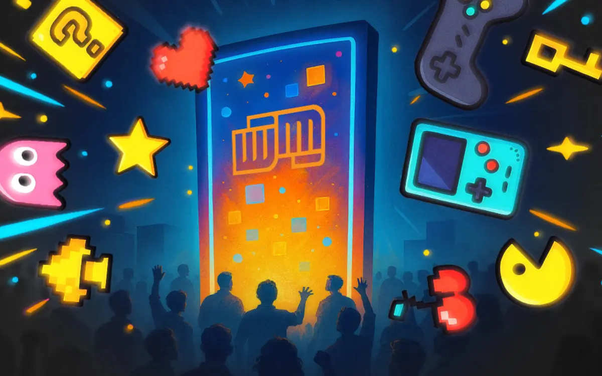

Full article · Workinman Interactive
5 Tips for Gamifying Even the Most Boring App
How progression, habit loops, achievements, competition, and surprise can make utility apps more engaging.

Gamifying an application can transform even the most mundane user experience into something engaging, rewarding, and fun. By incorporating game-like mechanics, apps across various industries—corporate tools, e-commerce platforms, clinical and medical applications, and utility services—can enhance user retention, boost engagement, and encourage word-of-mouth promotion. Beyond that, gamification promotes feature exploration and, most importantly, increases enjoyment, keeping users coming back.
A successful gamification system hinges on a well-implemented user profile. A secure user account system, ideally cloud-based, ensures users can engage with the app from multiple devices without losing progress. Personalization, such as avatars, badges, and other visual rewards, strengthens the gamification framework and enhances user investment, and self-identity, in the app.
Additionally, gamification flourishes in apps with abundant content and activities. While lightweight applications can still benefit from gamification, the broader and deeper the content offering, the more rewarding and long-lasting the gamified experience becomes.
1. Use a Progression System to Drive Continued Engagement
A progression system provides users with a sense of achievement, encouraging long-term engagement. This can be implemented through an XP (experience points) and leveling (rank) system, where users earn XP by interacting with the app. As users accumulate XP, they level up, unlocking new tiers that offer fresh incentives.
To make leveling up feel meaningful, an in-app notification with celebratory fanfare reinforces the accomplishment. Additionally, offering rewards such as new badges, avatars, or visual effects makes the leveling system more enticing and motivates users to reach the next tier.
To prevent users from progressing too quickly and burning through content, set level thresholds that extend engagement over time. For example, if you want users to engage with the app for a year, ensure they cannot max out their progress in just a few weeks.
Transparency is key—users should easily track their XP earnings and progress towards the next level. If the app has social elements, displaying levels and rewards to others fosters competition and makes higher tiers aspirational. In e-commerce applications, replacing XP with loyalty points that unlock real-world rewards and discounts are a proven retention method that is sure to entice those that are uninterested in digital rewards.
The beauty of a progression system is that it can be implemented at a basic level for a short span when the app initially releases, and can be added to over time, as the app develops and users increase. Higher ranks and their associated rewards have some time to be created before users catch up. The scheme that drives it can also be tweaked and refined based on user analytics and feedback, perfecting the experience as it matures.
2. Create and Promote a Daily Habit Loop
Encouraging daily app usage is crucial for long-term retention. A well-structured daily habit loop ensures users return regularly and engage with essential app features. This loop should be intuitive—guiding users from their initial interaction to a rewarding conclusion, which motivates them to return the next day. Although your business goals should not be ignored, and the loop can be carefully crafted to include sections of the app you want them to form habits around.
Many successful apps cultivate habitual use. A transit app might encourage daily route checks, a coffee-ordering app could promote seasonal drinks and offer loyalty rewards for consecutive purchases, and a health-tracking app could prompt users to log their blood pressure or weight daily then provide analytics and tips. These interactions create a routine, reinforcing consistent engagement. Make sure your ideal loop is identified, optimized, and that gamification elements are hooked right into it to provide more encouragement to complete it regularly.
If an app lacks a natural daily habit loop, one can be artificially introduced. Daily challenges and streak systems reward users for logging in and engaging with specific features. For instance, offering a procedurally generated daily challenge awarding users XP for checking their history page, updating their profile, or referring a friend creates an incentive for daily participation in exchange for a faster climb up the leveling system.
A streak system can multiply XP earnings for consecutive days of app use, making it crucial for users to maintain engagement. The streak tracker should be highly visible upon app launch, reinforcing its importance and the consequences of missing a day.
Other daily content, such as featured products, news updates, or user dashboards, also provide fresh reasons to check in regularly and can reinforce habits. Make sure this daily content is visible and accessible quickly from the launch of the app, so it’s not a burden to find and access, assuring users will know it’s quick and easy to check in when they have downtime.
3. Provide and Track Goals and Achievements
Achievements, a core component of many video games, provide users with a set of objectives that reward engagement and effort. Originally designed to give gamers a sense of accomplishment and challenge, achievements have since been adopted into various applications to encourage continued interaction. These milestones serve as a roadmap of objectives to chase, catering to both newcomers and experienced users. Early achievements introduce users to the gamification system and provide encouragement during onboarding, reinforcing key actions and promoting deeper app exploration.
For long-term users, achievements serve as engagement milestones. For example, a user who has launched the app for 300 days might feel motivated to keep going until they reach the 500-day or 1,000-day milestone. This creates an ongoing investment in the app, driving longer retention and keeping interest.
Achievements should be visually appealing and provide tangible rewards, such as unique badges, avatars, or XP boosts. A well-designed achievements dashboard allows users to track both completed and pending achievements, keeping them engaged in the pursuit of new challenges. In productivity apps, milestones can be tied to work completed, and in educational apps they can be tied to the successful completion of quizzes, while in fitness apps, they can correspond to workout goals met. Achievements don’t have to be buttoned up and tied directly to the core content of the app. Use whimsically-themed achievements to keep things fun and interesting–earning the “Insomniac Achievement” for launching the app at 3am would give anyone a chuckle.
4. Implement Leaderboards and Social Competition
While individual achievements are rewarding, competition adds another layer of motivation. Without an audience, a user’s progress may feel meaningless. By introducing leaderboards and social challenges, users gain an avenue to showcase their progress and compete with others, fostering community.
Leaderboards can rank users based on various metrics—XP, streaks, orders placed, calories burned, lessons completed, or other relevant stats. These rankings can be categorized into all-time, daily, weekly, or monthly leaderboards. Geographic and skill-based leaderboards further personalize competition and engagement while giving a wider range of users a chase that better suits their interest.
Beyond standard leaderboards, team-based competitions like “Red vs. Blue” events add another layer of player participation. Users select (or are assigned) teams and collectively contribute towards a shared goal, such as “Hot Dog vs. Hamburger” in a food app or “Weight Lost vs. Muscle Gained” in a fitness app. Rotating themes keep these competitions fresh, ensuring users always have a new goal to strive for and a theme to drive their competitive spirit. As a bonus, these events can often provide valuable insight into the userbase’s interests.
Leaderboards and competitions should be actively promoted through in-app notifications and push alerts. Alerts informing users when they drop in rankings or when a competition is ending create urgency and encourage continued participation. When events are over, providing top contenders with bonus XP-and exclusive unlockables help drive them to compete in the next one.
5. Surprise and Delight Users
Apps that evoke joy and curiosity encourage repeated use. Even the most corporate and serious applications can introduce small, playful elements that make them more enjoyable.
One simple but effective strategy is hiding collectible stars or tokens throughout the app. When users discover and tap them, they earn XP or unlock rewards. Strategically placing these collectibles encourages users to familiarize themselves with your planned daily loop, explore different app sections, revisit key features, and maintain curiosity.
Small, delightful UI elements also enhance the experience. Interactive buttons, animated progress indicators, and playful input interactions create a more engaging environment. For instance, a financial app could depict a growing tree representing a user’s savings, or a retail app could feature a scratch-off ticket to reveal a daily deal or discount code.
Additionally, random surprise rewards—such as unannounced XP bonuses, exclusive discounts, or hidden features—can create a sense of excitement. If users feel they might receive a pleasant surprise at any time, they are more likely to check the app frequently.
Drive User Retention with Smart Gamification Strategies
Users today are accustomed to gamified experiences and have higher engagement expectations. To remain competitive, apps must not only deliver functional utility, but also create compelling engagement loops that rival popular daily-use apps like social media.
Corporate and business applications, which often suffer from low engagement outside of necessity, stand to gain the most from gamification. However, implementing gamification effectively requires expertise—without a thoughtful strategy, the effort may fall flat.
This is where an experienced game development company like Workinman Interactive can help. With over 18 years of experience developing games and gamified applications, Workinman has successfully integrated engagement-boosting mechanics into apps across health, commerce, military, marketing, entertainment, and service industries.
Workinman Interactive can analyze your app, design a tailored gamification plan, integrate analytics to track success, and even build an app from the ground up with gamification as a core driver. If you’re ready to transform your application into an engaging, retention-driving experience, Workinman can make it happen. Contact us to get started.
About this project
See the assignment, process, and Paul’s contribution.
Paul wrote and structured the article from Workinman’s editorial direction and gamification expertise.
Related work
Continue through the subject.

What Trade Show Booths Can Learn from Video Games
A case-led explanation of how participatory demos, social momentum, analytics, and iteration can turn a booth into an experience.

Making Digital Board Games Feel Real: 8 Tips
An eight-part guide to preserving rhythm, agency, atmosphere, solo play, and long-term interest when board games move to screens.

Games for Brands: What to Do, What to Avoid
A practical guide to brand guidelines, IP constraints, creative approvals, and risk in playable brand experiences.